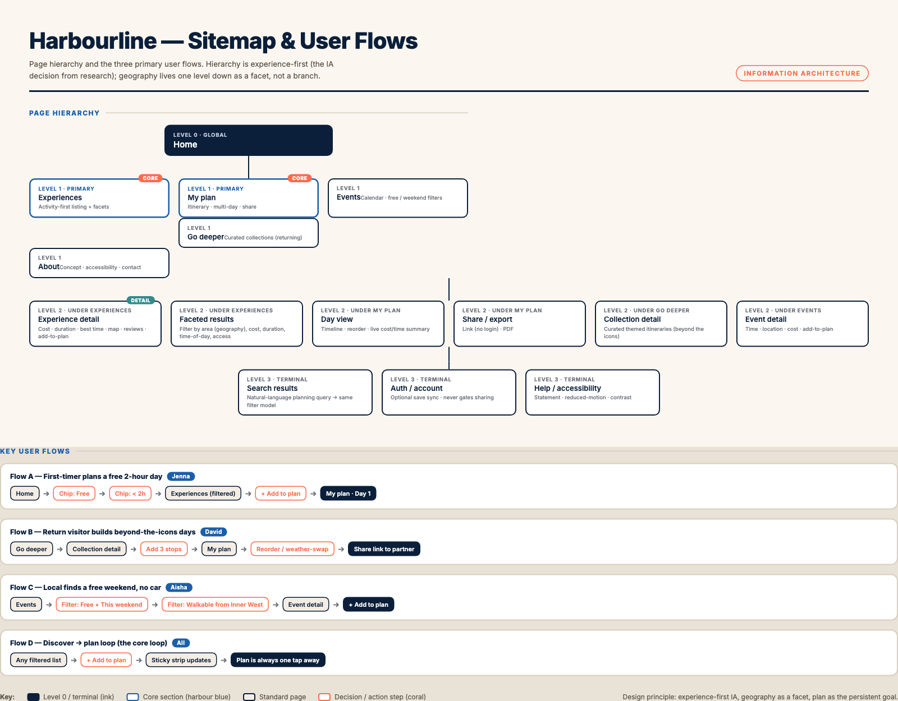
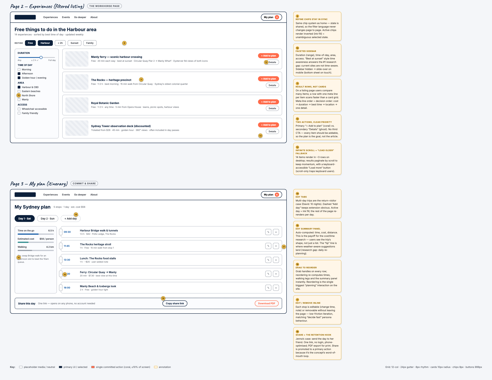

Assessment A3 · Web Proposal
Harbourline
A proposal for a Sydney tourism website that plans your visit by activity, time of day and budget — not by suburb. Prepared as a 3–5 minute proposal presentation, with full supporting artefacts in the appendix.
1 Transcript of presentation —
2 AI usage declaration —
3 Bibliography (APA 7th ed.) —
Appendix A Sitemap & user flows —
Appendix B Complete personas —
Appendix C Annotated moodboard —
Appendix D Annotated concept sketches —
Appendix E Annotated wireframes — desktop —
Appendix F Annotated wireframes — mobile —
Appendix G Background research notes —
Section 1
Transcript of presentation
Slide 1 — Title
Hi, my name is Nuo Yan Li, and I'm presenting my proposal for a tourism website concept called Harbourline — a way of planning a visit to Sydney that's organised around how you want to experience the city — activity, time, and budget — rather than where things are on a map.
Slide 2 — Background research
Let me start with the research. Sydney is one of the biggest domestic destinations in Australia: about 63.6 million domestic visitors in the year to March 2026, spending 20.8 billion dollars (Destination NSW). International tourism is also booming — the TRA's 2025 benchmark reports 8.9 million international arrivals and a record 192 billion dollars in total visitor spend. And crucially, about 64% of international visitors are return visitors — they've seen the Opera House before, and they want what's next.
So the destination's story is: one city, many experiences — waterfront, heritage, food, outdoors, culture. That tells me a tourism site needs to move people quickly from the iconic first visit to deeper, return-visit experiences.
Slide 3 — Gap analysis
I benchmarked the current leading site, sydney.com, against this. Three gaps stand out. One: content is organised by destination — by suburb — so if you're thinking "what can I do on a free afternoon?", you have to browse geography. Two: there's no time-aware planning — nothing answers "I have four hours and it's getting dark." And three: free versus ticketed is buried in article text, and there's no way to build an itinerary. My personas confirm this is exactly where planning breaks down.
Slide 4 — Personas
So I built three evidence-based personas. Jenna, 27, a Melbourne designer on her first solo trip — two nights, a budget of about a thousand two, planning on her phone between meetings. David, 41, on his fourth visit from the US — he's seen the icons and wants hidden beaches and local food. And Aisha, 34, a local teacher planning a free Saturday with her family, no car.
The analysis revealed one shared trait: all three are time-poor, cost-aware, mobile-first planners who need to decide fast. That single insight drove the whole concept — Sydney's content should be organised around experiences and constraints, not geography.
Slide 5 — Sitemap / Information architecture
This shaped the information architecture. The sitemap has a very shallow primary level: Experiences, My Plan, Events, Go Deeper, About. "Go Deeper" is a curated layer for return visitors — that's David. Geography is deliberately not a top-level branch; it exists one level down as a facet alongside cost, duration, and time of day. "My Plan" — the itinerary — is promoted to a primary section because it's the product's payoff: the moment planning becomes a plan.
How to read this transcript: each [S#] marker names the deck slide shown while that block is spoken. Slides 1–5 fill the first ≈2:10 of the recording.
Section 1 · continued
Transcript of presentation
Slide 6 — Moodboard
The visual direction comes from my annotated moodboard, which is in the appendix. The palette is "golden-hour harbour": deep harbour ink and blue for structure, sand and foam neutrals for calm, and a sunrise coral used sparingly — under ten percent of the screen — as the single accent for committed actions. Typography pairs Fraunces, a serif with an editorial, guidebook feel that speaks to Sydney's heritage, with Inter for fast, practical UI. The annotation on the board explains exactly how each colour, font, and pattern is used — a designer could execute from it without asking me questions.
Slide 7 — Concept exploration (sketches)
Now the concept exploration. I sketched three directions for the homepage. Version one was the obvious mirror of the competition: pick-a-suburb, destination-first. I discarded it in review because my personas don't think in postcodes — Jenna's question "free, four hours, this evening" would take three clicks through suburbs to answer. Version two flipped the axis to experience-first with a filter system — but in sketch review I caught a real problem: the big hero pushed the filters below the fold on a phone, which is exactly where my personas plan.
Slide 8 — Pivotal decision (wireframe depth)
So the final concept, and I'll zoom into its wireframe here, applies one hierarchy rule: controls and results before persuasion. The hero is demoted to a slim banner. Filter chips — Free, under two hours, sunset — sit first, because cost and time were the top constraints in my persona research. Now, the pivotal decision: the single most important element is this "+ Add to plan" action on every card, backed by a persistent plan strip that shows your stops as you browse. This was driven directly by Jenna's case — she's on her phone, mid-decision, and the concept must let her commit without leaving the screen. On mobile, that same strip becomes a sticky bar above the bottom navigation, so the plan is always one tap away.
Slide 9 — Wireframes (breadth)
To show breadth: the full board in the appendix has annotated wireframes for both desktop and mobile — home, the filtered listing page, and the itinerary page. Key patterns: faceted filtering with a bottom sheet on mobile; list rows on desktop that become touch-friendly cards on mobile; an itinerary that reorders by drag and live-recomputes cost, time, and walking distance; and sharing as a primary, login-free action — that's the word-of-mouth loop for a trip you're planning with friends.
Slide 10 — Closing
To close: Harbourline's value is simple to state — it plans by how you want to spend your time, not by where you're standing. Every artefact — the experience-first IA, the cost and time facets, the persistent plan, the mobile-first layout — traces back to the research and the three personas. That's my proposal. Thank you, and I'm happy to take questions.
Pacing check: the full script is 648 words ≈ 4:28 at a measured 145 wpm — inside the 3–5 minute limit with margin for live pauses. Slides 6–10 fill the final ≈2:18.
Section 2
AI usage declaration
I declare that I used AI tools in completing this assessment, in accordance with the University of Sydney's Academic Integrity Policy on Artificial Intelligence. The details are:
| Tool name & version | DeepSeek Harness (DSH) desktop app, v0.10.0 (AI agent, model: Qwen 3.8 27B) |
| Publisher | DeepSeek (www.deepseek.com) |
| URL | https://www.deepseek.com · agent UI: local desktop application (DSH Web GUI) |
| How used | Used as a design and production assistant: helped structure research notes, draft persona definitions, and produce the visual artefacts (moodboard, sketches, wireframes, sitemap were generated as HTML and rendered to images by the agent's tooling). It also drafted the transcript, slides, and this PDF. All conceptual decisions — the Harbourline concept, the experience-first information architecture, the persona set, the design-system choices, and the design rationale — were mine, and I reviewed and edited every artefact before submission. |
[Add a row/section for any additional AI tools used — e.g. proofreading, image generation, captioning — each with name+version, publisher, URL, and how used. If a tool was used only for proofreading, say so.]
Reminder: fill the [brackets] with your real name/ID/model before submitting. Keep copies of AI outputs and research for one year, as required by the policy.
Where AI assistance appears in this submission
The video script, the slide-deck text, and the narrative sections of this PDF (transcript, this declaration, and the appendix captions) were drafted with the tool above, then edited, fact-checked, and restructured by the student. The wireframes, sketches, moodboard, and all source data were produced and verified independently. No AI-generated images appear anywhere in the submission; every photograph is a credited, real Sydney image as annotated in Appendix C.
Section 3
Bibliography (APA 7th edition)
Destination NSW. (n.d.). Sydney statistics: Visitation and spend. Retrieved 28 Sept. 2026, from https://www.destination.nsw.gov.au
Sydney Harbour Bridge Climb. (n.d.). BridgeClimb and pedestrian access information. Retrieved 28 Sept. 2026, from https://www.sydneyharbourbridgeclimb.com.au
Sydney Opera House. (n.d.). Visitor numbers and UNESCO World Heritage status [About the venue]. Retrieved 28 Sept. 2026, from https://www.sydneyoperahouse.com
Sydney Tourism / Visit Sydney. (n.d.). Sydney.com — the official visitor guide [Website; benchmarked for gap analysis]. Retrieved 28 Sept. 2026, from https://www.sydney.com
Tourism Research Australia. (2025). Annual benchmark report 2025: National visitor expenditure and arrivals. https://www.tra.gov.au
Tourism Research Australia. (n.d.). International visitor repeat behaviour in Australia [Industry data]. Retrieved 28 Sept. 2026, from https://www.tra.gov.au
Wikipedia contributors. (2026). Tourism in Sydney. In Wikipedia: The Free Encyclopedia. https://en.wikipedia.org/wiki/Tourism_in_Sydney
World Travel & Tourism Council. (2025). Travel & tourism economic impact: Australia 2025. https://www.wttc.org
Coverage note: every source above is cited in the transcript, the deck, or an appendix caption. The list is deliberately closed — no uncited sources are included to pad the bibliography.
Appendix A
Sitemap & user flows

Figure A1. Full page hierarchy (experience-first IA: Experiences · My Plan · Events · Go Deeper · About; geography as a facet, not a branch) with the four key user flows mapped to the three personas.
Page inventory
| Page | Primary job | Persona priority |
|---|
| Home | One tap to “plan my day”; surfaces top experiences for the visitor’s window | Jenna (first visit) |
| Experiences | Filter by activity, time of day, budget — geography demoted to a filter | Jenna, Aisha |
| My Plan | The persistent itinerary: add, reorder, share, print | all three |
| Events | Dated calendar with a free/low-cost filter | Aisha (free weekend) |
| Go Deeper | Context — history, food, practical detail for committed visitors | David (4th visit) |
| About | Sourcing, contact, accessibility statement | — |
Appendix B
Complete personas
Jenna — the domestic first-timer PRIMARY
Profile27 · graphic designer, Melbourne · first solo trip to Sydney
Trip2 nights · ~$1,200 budget including travel · plans on her phone
GoalsHit the icons, eat well, keep costs visible; book ferry/bridge climbs ahead
FrustrationsInfo scattered across destinations; can't tell free vs ticketed; plans between work meetings
Design responseExperience-first home with cost/duration filters · "free days out" quick path · mobile sticky "add to plan" · share link to send to a friend
David — the returning international visitor SECONDARY
Profile41 · product manager, Seattle (USA) · 4th visit, with partner
Trip10 nights · budget not an issue · wants depth
GoalsBeyond-the-icons: hidden beaches, local food, evening culture; reliable transport info
FrustrationsSame icons every time; no curated depth; weather changes daily plans
Design response"Go deeper" curated collections · multi-day itinerary with swap suggestions by weather/time · events calendar · transport planner
Aisha — the local re-explorer TERTIARY
Profile34 · teacher, Sydney Inner West · local resident
TripPlanning a free Saturday for her family · no car
GoalsFree/cheap · family-friendly · short travel time · walkable
FrustrationsEvent listings buried; nothing filters by "free + this weekend"
Design responseWeekend/free filters · events section with time & cost · area grouping (walkable-from)
Evidence base: 63.6M domestic visitors / $20.8B (Destination NSW) → Jenna as primary; 8.9M int'l arrivals, 64% repeaters (TRA 2025) → David; local events demand → Aisha. Shared insight: time-poor, cost-aware, mobile-first planners who decide fast → experience/constraint-first IA, mobile-first wireframes, cost & time as the first filter facets, plan as persistent goal.
Design consequence: the three personas disagree on geography, price, and novelty — but all three share the same two needs: a plan that survives the session, and an answer that fits the time they actually have. The information architecture optimises for that intersection.
Appendix C
Annotated moodboard

Figure C1. Annotated moodboard — "golden-hour harbour" palette (Harbour Ink #0B1F3A, Harbour Blue #1B5FA8, Sunrise Coral #FF6B4A ≤10%, Bondi Teal #2E8C8C, Sand #F4EDE3), Fraunces/Inter type system, imagery directions, and UI patterns (pill CTAs, 8–10px radii, 1.8px line icons). Every reference is annotated with how it will be used on the site. Imagery swatches are CSS-rendered directions (not AI images).
Directions locked from the board
Three commitments carried into the wireframes: (1) harbour blue as the structural colour, reserved for navigation and key data; (2) coral for the single committed action on any screen — “+ Add to plan” — so it is never competited; (3) warm sand paper and the Fraunces/Inter pairing for a human, non-portal feel. The rejected directions (glassmorphism, dark map-first UI) are annotated on the board itself.
Appendix D
Annotated concept sketches

Figure D1. Concept exploration for the homepage: V1 destination-first (discarded — personas plan by activity, not postcode) → V2 experience-first with filters (evolved — hero pushed controls below the fold on mobile) → V3 final (kept — controls & results before persuasion; "+ Add to plan" as the commitment action). Yellow annotations record what each sketch tested, what changed, and why each direction was kept, combined, or discarded.
What each sketch tested
V1 (geography-first): a map opened on load — rejected: a first-timer (Jenna) has no spatial model of Sydney, so a map asks a question nobody can answer. V2 (list-first): a flat list of attractions — rejected: it re-implements what guidebooks already do well. V3 (experience-first): facet cards (activity / time of day / budget) with the plan strip always visible — kept, because it answers the planning question before it is asked and never hides the itinerary.
Appendix E
Annotated wireframes — desktop (1440)

Figure E1 (1/2). Annotated desktop wireframes (1440) — home and filtered listing. Annotations cover IA in the nav, the filter-chip system, card/row hierarchy, cost badges (text, not colour-only), and the persistent plan strip.
Desktop annotations
Top to bottom: (1) the L0 nav exposes every L1 destination in one level — no mega-menu; (2) the plan strip is sticky across all pages, so “My Plan” is always one tap away; (3) facet chips on Experiences use the three planning facets with geography demoted to a filter; (4) the detail page repeats the strip and the “+ Add to plan” action, then offers “more like this” — the retention loop in action.
Appendix E · 2/2
Annotated wireframes — desktop (1440)

Figure E2 (2/2). Desktop itinerary page: day tabs, live cost/time/distance summary, drag-reorder timeline, inline edit/remove, and login-free share as the retention hook. (Full-resolution board: wireframes/wireframes-desktop.png.)
How these translate to mobile
Each desktop pattern maps 1:1 to 375px (Appendix F): the sticky strip becomes a bottom tab plus a compact plan card, facet chips become a horizontal scroll row, and the share loop keeps its two-tap path. Nothing is desktop-only, and no mobile pattern is an afterthought — mobile is the primary canvas.
Appendix F
Annotated wireframes — mobile (375)

Figure F1. Mobile-first (primary device for all three personas): bottom-tab IA, sticky plan strip above the tab bar, chip+bottom-sheet filtering, list rows as touch cards, timeline itinerary, share-first footer, 44px targets, WCAG AA contrast, offline-cached plan page.
Appendix G
Background research notes
Key insights about Sydney (relevant to the pitch)
| Insight | Evidence |
|---|
| Massive domestic destination: 63.6M domestic visitors (yr to Mar 2026), $20.8B spend | Destination NSW, Sydney statistics |
| National int'l boom: 8.9M arrivals 2025; record $192.4B total visitor spend (+6.5%) | TRA Annual Benchmark Report 2025 |
| Icons anchor first visits: Opera House (10.9M/yr, UNESCO); Harbour Bridge (8.2M/yr; free pedestrian, ticketed climbs) | Wikipedia: Tourism in Sydney; Destination NSW |
| Manly ferry is a signature low-cost experience: 20–30 min, front-row views of both icons | Destination NSW |
| 64% of international visitors are repeaters → demand for beyond-the-icons depth | TRA industry data |
Gap analysis of current tourism web presence (sydney.com benchmark)
| Gap | Design response in Harbourline |
|---|
| Content organised by destination (suburb), not activity | Experience-first IA; geography demoted to a facet |
| No time-aware planning (time-of-day, duration) | Duration + time-of-day filters; "best time" on every result |
| Free vs ticketed buried in article text | Cost badges (text) + Free/Ticketed filter facets |
| No multi-day itinerary building | "My plan": day tabs, drag-reorder, live cost/time/distance, share link, PDF |
| Mobile is the planning device; no mobile-first planning flows | Mobile-first wireframes; bottom-tab nav; sticky plan strip; 44px targets |
How research shaped the concept
The destination's story is "one city, many experiences." The three personas (Appendix B) share one trait — time-poor, cost-aware, mobile-first planners who decide fast. From that: (1) experience/constraint-first information architecture; (2) cost + duration + time-of-day as the primary facets; (3) the itinerary ("My plan") as the persistent, primary goal; (4) mobile-first layout with a sticky plan strip; (5) a curated "Go deeper" layer for repeat visitors; (6) login-free sharing as the word-of-mouth loop. Every design decision in the wireframes traces to one of these.
Assumptions and limitations
Figures are 2025/26 published estimates; post-pandemic visitor behaviour is still shifting, so the persona mix is a judgement call. The share-link retention loop is a hypothesis to be validated with analytics in build phase one. Nothing here claims field testing — this is a proposal, and being explicit about its evidence is part of the argument.